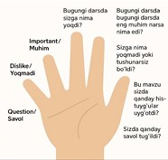

3.3 Avtomaktab o‘qituvchilarining pedagogik mahoratini oshirishda qo‘llaniladigan besh barmoq metodi
"Besh barmoq" metodi – bu pedagogik usul bo‘lib, uni avtomatlashtirish, oliy ta’lim va kasbiy tayyorgarlik sohasida o‘qituvchilarning kasbiy kompetensiyalarini oshirish va pedagogik mahoratini yanada takomillashtirishda foydalanish mumkin.
Bu metod dastlab pedagogikada foydalanilgan bo‘lsada, u boshqa sohalarda ham, xususan, avtovoquvchi, maxsus texnik bilimlar va mahoratlarni oshirishda qo‘llanishi mumkin. Besh barmoq metodi ma’ruzalar, mashg‘ulotlar va o‘quv jarayonlarini samarali tashkil qilish, o‘qituvchilarning ishlash mazmunlari va strategiyalariga yordam beradi.
"Besh barmoq" metodining elementlari:
Birinchidan barmoq – nazariy bilim.
Bu element o‘qituvchilarga belgilangan darslarning nazariy asoslari, ma’lumotlarning mazmuni va konsepsiyalariga olib keladi.
Ikkinchidan barmoq – amaliyot. O‘qituvchilar turli amaliy mashqlar, simulyatsiyalar orqali nazariy bilimlarni amalga oshirish va ularni rivojlantirishga harakat qilishadi.
Uchinchi barmoq – tahlil. O‘qituvchi o‘quv jarayonini tahlil qiladilar, kelajakda qanday usul va texnologiyalar ishlashini tushunishga harakat qiladilar.
To‘rtinchi barmoq – innovativ yondashuv. Bunday usul yangi va ilg‘or pedagogik texnologiyalarni joriy qilishni o‘z ichiga oladi. Avtosoqish va zamonaviy texnikaga asoslangan o‘qitish usullari.
Beshinchisi barmoq – samaradorlik va natija. O‘quvchilarning darajasi, ish natijalari, ma’ruzalar va muloqotlar asosida o‘quv jarayonining samaradorligi baholanadi.
Bu metod, pedagoglar va o‘qituvchilarning kasbiy malaka va pedagogik mahoratini shakllantirish, aniq va samarali o‘quv jarayonlarini tashkil qilishda muhim vosita bo‘lib, ularning ish faoliyatida qo‘llanilishi zarur.
Bu metod dastlab pedagogikada foydalanilgan bo‘lsada, u boshqa sohalarda ham, xususan, avtovoquvchi, maxsus texnik bilimlar va mahoratlarni oshirishda qo‘llanishi mumkin. Besh barmoq metodi ma’ruzalar, mashg‘ulotlar va o‘quv jarayonlarini samarali tashkil qilish, o‘qituvchilarning ishlash mazmunlari va strategiyalariga yordam beradi.
"Besh barmoq" metodining elementlari:
Birinchidan barmoq – nazariy bilim.
Bu element o‘qituvchilarga belgilangan darslarning nazariy asoslari, ma’lumotlarning mazmuni va konsepsiyalariga olib keladi.
Ikkinchidan barmoq – amaliyot. O‘qituvchilar turli amaliy mashqlar, simulyatsiyalar orqali nazariy bilimlarni amalga oshirish va ularni rivojlantirishga harakat qilishadi.
Uchinchi barmoq – tahlil. O‘qituvchi o‘quv jarayonini tahlil qiladilar, kelajakda qanday usul va texnologiyalar ishlashini tushunishga harakat qiladilar.
To‘rtinchi barmoq – innovativ yondashuv. Bunday usul yangi va ilg‘or pedagogik texnologiyalarni joriy qilishni o‘z ichiga oladi. Avtosoqish va zamonaviy texnikaga asoslangan o‘qitish usullari.
Beshinchisi barmoq – samaradorlik va natija. O‘quvchilarning darajasi, ish natijalari, ma’ruzalar va muloqotlar asosida o‘quv jarayonining samaradorligi baholanadi.
Bu metod, pedagoglar va o‘qituvchilarning kasbiy malaka va pedagogik mahoratini shakllantirish, aniq va samarali o‘quv jarayonlarini tashkil qilishda muhim vosita bo‘lib, ularning ish faoliyatida qo‘llanilishi zarur.
-

Yo‘l harakati qoidalari fanini o‘qitish sohasida qo‘llaniladigan "besh barmoq" metodi
Yo‘l harakati qoidalari fanini o‘qitish sohasida qo‘llaniladigan "besh barmoq" metodi avvalo, o‘qituvchilarning pedagogik mahoratini oshirish va o‘qituvchilarga yo‘l harakati qoidalarini o‘rgatishda samarali usul hisoblanadi. Bu metod yo‘l harakati qoidalari, xavfsizlik va yo‘llardagi turli vaziyatlardagi qoidalarni yodlash va ularni hayotda qo‘llashda yordam beradi.
"Besh barmoq" metodining har bir barmog‘i yo‘l harakati qoidalarini o‘rgatishda aniq va samarali usullarni belgilashga yordam beradi. Bu metodning asosiy elementlari quyidagicha bo‘lishi mumkin:
1. Birinchi barmoq – Yo‘l harakati qoidalarini nazariy jeihatdan bilib olish. O‘qituvchilar va o‘quvchilar yo‘l harakati qoidalarini aniq, to‘liq va saviyali bilishlari zarur. Bu – yo‘l belgilarini, xavfsiz harakatlanish qoidalarini, piyodalar va transport vositalari uchun belgilangan qoidalarni anglashdan iborat.
2. Ikkinchi barmoq – olingan nazariy bilimlarni amaliyotda qo‘llash. Yo‘l harakati qoidalarini amaliyotda to‘g‘ri qo‘llay olish zarur. Masalan, o‘quvchilar simulyatsiyalashgan vaziyatlarda yoki maxsus kurslarda (avtomaktablarda) amaliy mashqlarni bajaradi, shu orqali ularning xavfsizlikni ta’minlashga va yo‘l harakati qoidalarini hayotda qo‘llash ko‘nikmasi shakllanadi.
3. Uchinchi barmoq – xavf-xatarlarni aniqlash va bartaraf etish. Yo‘l harakatidagi xavf-xatarlar va avariyalardan saqlanish uchun ularni aniqlash muhimdir. O‘quvchilarga yo‘ldagi xavfli vaziyatlarni, yo‘l belgilarini, yo‘lda uchrashi mumkin bo‘lgan to‘siqlarni va boshqa muammolarni aniqlash va ularga qanday yechimlar topish bo‘yicha ko‘nikmalarni berish.
4. To‘rtinchi barmoq – modellashtirish va vaziyatlar tahlili. O‘qituvchi va o‘quvchilar turli vaziyatlarni modellashtirish (simulyatsiyalash) orqali yo‘l harakati qoidalarini o‘rganishadi. Bu vaziyatlar real hayotga yaqin bo‘lib, yo‘l-transport hodisalarining oldini olish va to‘g‘ri qarorlarni qabul qilish ko‘nikmasi rivojlanadi.
5. Beshinchi barmoq – natija va baholash. O‘quvchilarning yo‘l harakati qoidalariga munosabati, ularning bilish darajasi va amaliy ko‘nikmalari baholanadi. Ushbu baholash samaradorlikni oshirishga va o‘quv jarayonini yanada yaxshilashga yordam beradi.
Qo‘llanish maqsadi:
Yo‘l harakati qoidalarini yaxshiroq tushunish va ularni amalda qo‘llay bilish ko‘nikmasini oshirish;
transport vositalari va piyodalarning xavfsizligini ta’minlash;
avtomaktablarda yoki boshqa transport vositalarini ekspluatatsiyasi bilan bog‘liq tashkilot va muassasalarda ta’lim jarayoni samaradorligini oshirish.
Bu metod jamoaviy ishlash, tahlil va amaliy ko‘nikmalarni shakllantirishga asoslangan bo‘lib, yo‘l harakati xavfsizligini oshirishga va yo‘llardagi avariyalar sonini kamaytirishga yordam beradi.
"Besh barmoq" metodining har bir barmog‘i yo‘l harakati qoidalarini o‘rgatishda aniq va samarali usullarni belgilashga yordam beradi. Bu metodning asosiy elementlari quyidagicha bo‘lishi mumkin:
1. Birinchi barmoq – Yo‘l harakati qoidalarini nazariy jeihatdan bilib olish. O‘qituvchilar va o‘quvchilar yo‘l harakati qoidalarini aniq, to‘liq va saviyali bilishlari zarur. Bu – yo‘l belgilarini, xavfsiz harakatlanish qoidalarini, piyodalar va transport vositalari uchun belgilangan qoidalarni anglashdan iborat.
2. Ikkinchi barmoq – olingan nazariy bilimlarni amaliyotda qo‘llash. Yo‘l harakati qoidalarini amaliyotda to‘g‘ri qo‘llay olish zarur. Masalan, o‘quvchilar simulyatsiyalashgan vaziyatlarda yoki maxsus kurslarda (avtomaktablarda) amaliy mashqlarni bajaradi, shu orqali ularning xavfsizlikni ta’minlashga va yo‘l harakati qoidalarini hayotda qo‘llash ko‘nikmasi shakllanadi.
3. Uchinchi barmoq – xavf-xatarlarni aniqlash va bartaraf etish. Yo‘l harakatidagi xavf-xatarlar va avariyalardan saqlanish uchun ularni aniqlash muhimdir. O‘quvchilarga yo‘ldagi xavfli vaziyatlarni, yo‘l belgilarini, yo‘lda uchrashi mumkin bo‘lgan to‘siqlarni va boshqa muammolarni aniqlash va ularga qanday yechimlar topish bo‘yicha ko‘nikmalarni berish.
4. To‘rtinchi barmoq – modellashtirish va vaziyatlar tahlili. O‘qituvchi va o‘quvchilar turli vaziyatlarni modellashtirish (simulyatsiyalash) orqali yo‘l harakati qoidalarini o‘rganishadi. Bu vaziyatlar real hayotga yaqin bo‘lib, yo‘l-transport hodisalarining oldini olish va to‘g‘ri qarorlarni qabul qilish ko‘nikmasi rivojlanadi.
5. Beshinchi barmoq – natija va baholash. O‘quvchilarning yo‘l harakati qoidalariga munosabati, ularning bilish darajasi va amaliy ko‘nikmalari baholanadi. Ushbu baholash samaradorlikni oshirishga va o‘quv jarayonini yanada yaxshilashga yordam beradi.
Qo‘llanish maqsadi:
Yo‘l harakati qoidalarini yaxshiroq tushunish va ularni amalda qo‘llay bilish ko‘nikmasini oshirish;
transport vositalari va piyodalarning xavfsizligini ta’minlash;
avtomaktablarda yoki boshqa transport vositalarini ekspluatatsiyasi bilan bog‘liq tashkilot va muassasalarda ta’lim jarayoni samaradorligini oshirish.
Bu metod jamoaviy ishlash, tahlil va amaliy ko‘nikmalarni shakllantirishga asoslangan bo‘lib, yo‘l harakati xavfsizligini oshirishga va yo‘llardagi avariyalar sonini kamaytirishga yordam beradi.